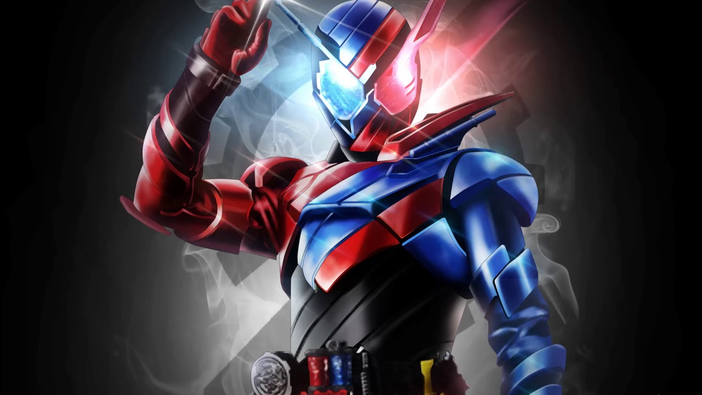
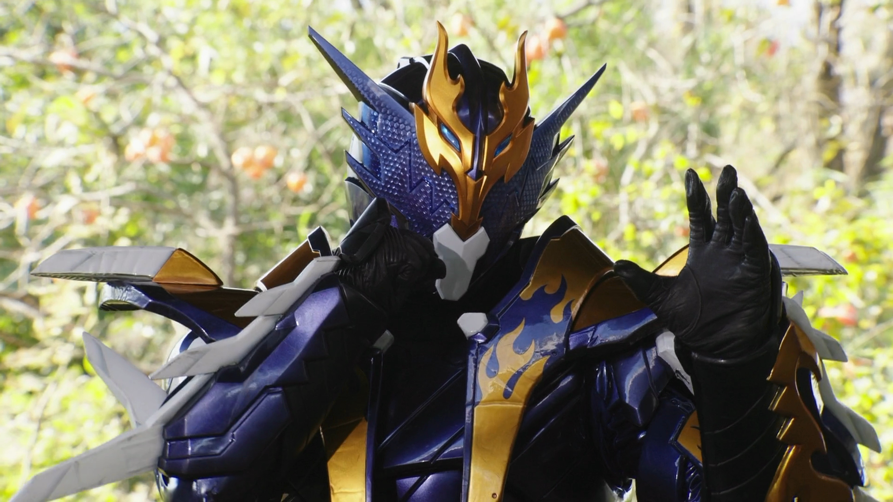
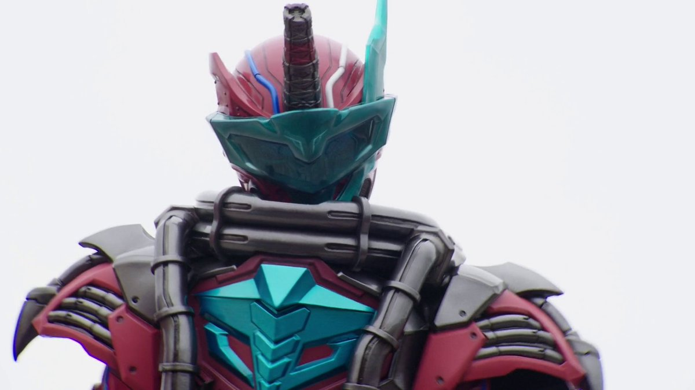
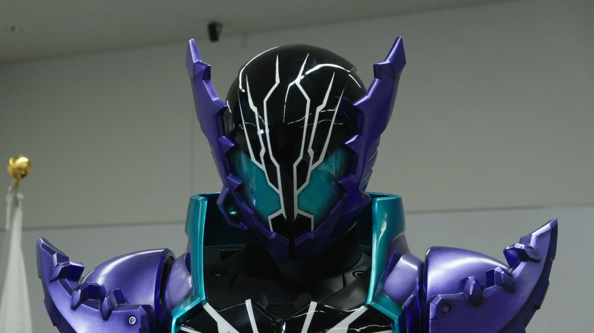
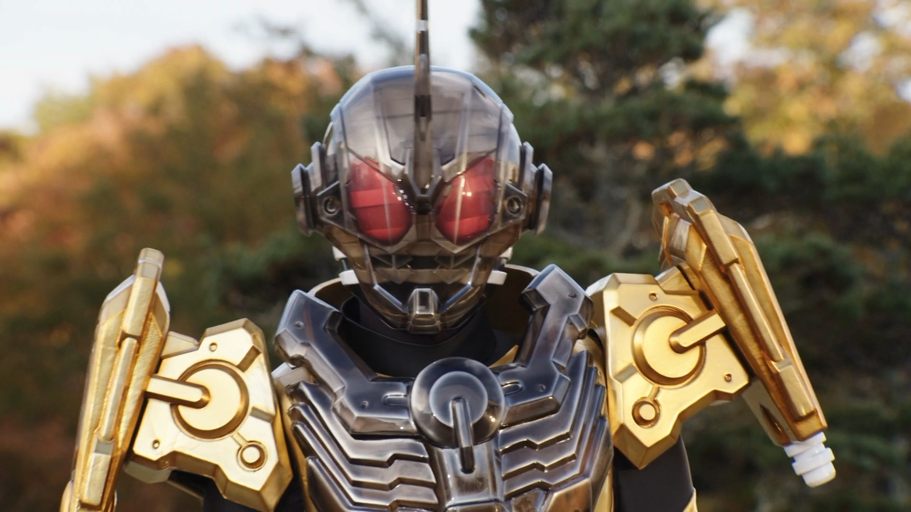

Main Transformations
Kamen Rider Build

Character:
Sento Kiryu
Height: 196 cm (6.43 ft)
Weight: 99 kg
Gadgets: Build Driver, Rabbit Fullbottle, and Tank Fullbottle
Kamen Rider Cross-Z

Character:
Ryuga Banjo
Height: 197 cm (6.46 ft)
Weight: 102.4 kg
Gadgets: Build Driver, Cross-Z Dragon, and Dragon Fullbottle
Blood Stalk

Character:
Soichi Isurugi (Master)
Height: 201.5 cm (6.61 ft)
Weight: 102 kg
Gadgets: Transteam Gun and Cobra Fullbottle
Kamen Rider Rogue

Character:
Gentoku Himuro
Height: 194 cm (6.36 ft)
Weight: 110.8 kg
Gadgets: Sclash Driver and Crocodile Crack Fullbottle
Kamen Rider Grease

Character:
Kazumi Sawatari
Height: 203 cm (6.66 ft)
Weight: 118.3 kg
Gadgets: Sclash Driver and Robot Sclash Jelly
Character Status
Name
Status
New World Status
Sento Kiryu
Alive
Alive
Ryuga Banjo
Alive
Alive
Soichiro Isurugi (Master)
Alive
Alive
Gentoku Himuro
Dead
Alive
Kazumi Sawatari
Dead
Alive